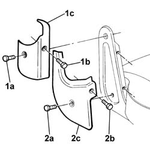
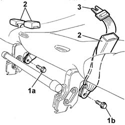
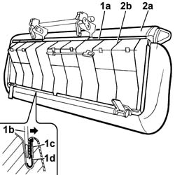
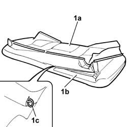
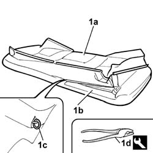
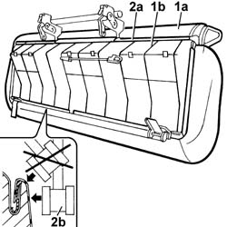
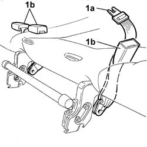
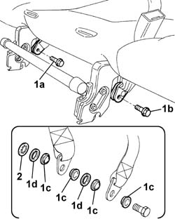

7050A28 Rear seat CUSHION COVER - R.R. with cushion removed
- Path
- Procedures > 70 FITTINGS > 7050 REAR SEATS > 7050A rear seat assembly > 7050A28 Rear seat CUSHION COVER - R.R. with cushion removed
- Kind
- repair procedure (removal / refitting; the operation number is the code)
- Applies to
- all engines; all production periods
- Interactive page
- https://sloeber94.github.io/elrnDB-fDbl/en/#/2585199
Applies to: all engines; all production periods; only with equipment: Doblò trim level
 Removing
Removing
 Refitting
Refitting1. Undo the bolt (1a) and (1b) and remove the top cover (1c).
2. Undo the bolt (2a) and (2b) and remove the bottom cover (2c).
Carry out the same operations for the remaining side covers.

Applies to: all engines; all production periods; only with equipment: Doblò trim level
1. Undo the fixing bolts (1a) and (1b), saving the internal spacers.
2. Withdraw the rear seat belt anchorages.
3. Withdraw the central rear seat belt.

Applies to: all engines; all production periods; only with equipment: Doblò trim level
1. Prise off the whole cover surround (1a) using an ordinary screwdriver with blade of suitable dimensions (1b), so as to open the channel (1c) and release the cover profile (1d).
2. Separate the rear cushion (2a) from the frame (2b).

Applies to: all engines; all production periods; only with equipment: Doblò trim level
1. Separate the rear cushion cover (1a) from the padding (1b), opening the retaining hooks (1c).

Applies to: all engines; all production periods; only with equipment: Doblò trim level
Refitting
RemovingCheck that the padding and cover are not damaged.
In the case of damage, replace the damaged component.
Fit the cover on the padding.
1. Secure the cover (1a) to the cushion padding (1b) using new hooks (1c), using the tool (1d).
 | Name | Country |
|---|---|---|
1d | Pliers for metal points | 1.878.017.001 |

Applies to: all engines; all production periods; only with equipment: Doblò trim level
1. Fit the cover (1a) on the frame (1b).
2. Fit the cover surround (2a) in its seating and hammer down the channel using a rubber hammer (2b).

Applies to: all engines; all production periods; only with equipment: Doblò trim level
1. Refit the central rear seat belt (1a) and the rear seat belt anchorages (1b) in their seatings.

Applies to: all engines; all production periods; only with equipment: Doblò trim level
1. Tighten the fixing bolts (1a) and (1b), fiting the plastic spacers (1c) and washers (1d), as shown in the figure.
2. Fit the retaining washer.

Applies to: all engines; all production periods; only with equipment: Doblò trim level
From both sides, fit the top and bottom covers and fix them with their bolts.